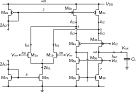
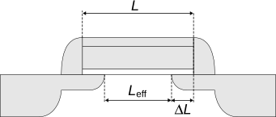

| Specification | Symbol | Value | Unit |
|---|---|---|---|
| Minimum DC gain | \(A_{{dc}}\) | 100 | \(dB\) |
| Minimum gain-bandwidth product | \(GBW\) | 1 | \(MHz\) |
| Load capacitance | \(C_L\) | 1 | \(pF\) |
| Maximum input-referred random offset voltage | \(V_{{os}}\) | 10 | \(mV\) |
| Phase margin | \(PM\) | 60 | \(^{\circ}\) |
Design of the Folded Cascode OTA
For Generic 180nm Bulk CMOS Process (Version 3)
Abstract
This notebook presents the analysis, design and simulation of the symmetrical cascode OTA.
1 Introduction

Note
Note that all nMOS transistors in Figure 1 have an odd number and all the pMOS transistors an even number which explains the numbering process (this is the reason why there is no M6 transistor!).
This notebook presents the design of the folded cascode differential OTA [1] shown in Figure 1 for the same specifications used for the other OTAs. The folded cascode OTA is similar to the telescopic OTA except that the current \(I_{b3}\) flowing in the current mirror M3a-M3b can be different than the current \(I_{b1}\) flowing in the differential pair. How to choose the ratio \(\alpha \triangleq I_{b3}/I_{b1}\)? If the current \(I_{b3}\) is made equal to current \(I_{b1}\) (\(\alpha=1\)), then if the differential input voltage is largely positive, the differential pair will saturate and all the bias current \(2\,I_{b1}\) is then steered into M1a. This means that all the bias current \(I_{b2}\) is flowing into M1a and no current is available at the input of the cascode current mirror M3a-M3b. This situation should be avoided because it introduces an additional delay to charge the parasitic capacitance at node 3 and bring the current mirror M3a-M3b back to normal operation. Usually, the ratio \(\alpha\) is taken \(1.2 < \alpha < 2\). In order to minimize the current consumption, we will choose \(\alpha = 1.2\). This means that the folded cascode OTA unavoidably consumes more current than the telescopic OTA (more than twice).
We will start with a detailed analysis of the OTA which will allow to derive all the design equations that will be used in the design phase. The OTA is then designed for a given set of specifications for a generic 180 nm bulk CMOS technology. The design is then validated by simulations with ngspice [2] using the EKV 2.6 compact model [3] [4] [5] [6] with parameters corresponding to a generic 180 nm bulk CMOS technology [7] [8].
We now start with the small-signal analysis.
2 Analysis
2.1 Small-signal analysis
In a 1st-order analysis, we can neglect the capacitances at the low impedance cascode nodes 4, 5, 6 and 7 and only account for the capacitances at high impedance nodes 3 (gate of current mirror M3a-M3b) and out (output node). The circuit becomes similar to that of the simple OTA, with the dominant pole \(\omega_0\) at the output node (out) and the non-dominant pole \(\omega_p\) at the current mirror node 3. The transfer function also has a pole-zero doublet. Its transfer function is then given by \[\begin{equation} A_{dm}(s) \triangleq \frac{\Delta V_{out}}{\Delta V_{in}} \cong A_{dc} \cdot \frac{1+s/\omega_z}{(1 + s/\omega_0)(1 + s/\omega_p)} \cong \frac{A_{dc}}{1 + s/\omega_0} \cong \frac{\omega_u}{s}, \end{equation}\] where \[\begin{align} A_{dc} &\cong \frac{G_{m1}}{G_o},\\ G_o &\cong \frac{G_{ds3}\,G_{ds5}}{G_{ms5}} + \frac{(G_{ds1}+G_{ds2})\,G_{ds4}}{G_{ms4}},\\ \omega_0 &\cong \frac{G_o}{C_L},\\ \omega_p &\cong \frac{G_{m3}}{C_3},\\ \omega_z &= 2\,\omega_p,\\ \omega_u &= A_{dc} \cdot \omega_0 \cong \frac{G_{m1}}{C_L}. \end{align}\]
2.2 Noise Analysis
At low-frequency the noise of the cascode transistors M4a-M4b and M5a-M5b can be neglected and the noise analysis is then identical to that of the simple OTA. The PSD of the output noise current is given by \[\begin{equation} S_{nout} \cong 2\,(S_{I_{n1}} + S_{I_{n2}} + S_{I_{n3}}) \end{equation}\] which can be expressed in terms of the output noise conductance \[\begin{equation} S_{nout} = 4kT\cdot G_{nout}, \end{equation}\] where \[\begin{equation} G_{nout} \cong 2\,(G_{n1} + G_{n2} G_{n3}), \end{equation}\] with \[\begin{equation} G_{ni} = \gamma_{ni} \cdot G_{mi} + G_{mi}^2 \cdot \frac{\rho_i}{W_i\,L_i\,f} \quad \textrm{for $i=1,2,3$}. \end{equation}\]
The input-referred noise resistance is then given by \[\begin{equation} R_{nin} \triangleq \frac{G_{nout}}{G_{m1}^2} = \frac{2\,(G_{n1}+G_{n2}+G_{n3})}{G_{m1}^2} = \frac{2\,G_{n1}}{G_{m1}^2} \cdot \left(1 + \frac{G_{n2}}{G_{n1}} + \frac{G_{n3}}{G_{n1}}\right) \end{equation}\] which we rewrite as \[\begin{equation} R_{nin} = \frac{2\,G_{n1}}{G_{m1}^2} \cdot (1 + \eta) \end{equation}\] with \[\begin{equation} \eta = \frac{G_{n2}}{G_{n1}} + \frac{G_{n3}}{G_{n1}}. \end{equation}\]
\(\eta\) represents the contribution of the current source M2b-M2c and the current mirror M3a-M3b referred to the input and normalized to the contribution of the differential pair M1a-M1b. Of course during the design phase we will try to minimize \(\eta\).
2.2.1 Input-referred thermal noise
The input-referred thermal noise resistance is given by \[\begin{equation}\label{eqn:rnth} R_{nth} = \frac{2\,\gamma_{n1}}{G_{m1}} \cdot (1 + \eta_{th}), \end{equation}\] where \[\begin{equation} \eta_{th} =\frac{\gamma_{n2}}{\gamma_{n1}} \cdot \frac{G_{m2}}{G_{m1}} + \frac{\gamma_{n3}}{\gamma_{n1}} \cdot \frac{G_{m3}}{G_{m1}} \end{equation}\] represents the contribution to the input-referred thermal noise of the current source M2b-M2c and the current mirror M3a-M3b relative to that of the differential pair M1a-M1b. In case \(G_{m1} \gg G_{m2}\) and \(G_{m1} \gg G_{m3}\), then \(\eta_{th} \ll 1\) and the thermal noise is dominated by the input differential pair. Eqn. \(\eqref{eqn:rnth}\) can then be simplified to \[\begin{equation} R_{nth} \cong \frac{2\,\gamma_{n1}}{G_{m1}}. \end{equation}\]
The OTA thermal noise excess factor is defined as \[\begin{equation} \gamma_{ota} \triangleq G_m \cdot R_{nth} \end{equation}\] with \(G_m = G_{m1}\) the OTA equivalent transconductance. The OTA thermal noise excess factor then writes \[\begin{equation} \gamma_{ota} = 2\,\gamma_{n1} \cdot (1 + \eta_{th}). \end{equation}\] In the case \(G_{m1} \gg G_{m2}\) and \(G_{m1} \gg G_{m3}\), then \(\eta_{th} \ll 1\) and the noise is dominated by the input differential pair M1a-M1b. The OTA thermal noise excess factor can then be simplified as \[\begin{equation} \gamma_{ota} \cong 2\,\gamma_{n1}. \end{equation}\]
2.2.2 Input-referred flicker noise
The input-referred flicker noise is given by \[\begin{equation} R_{nfl} = \frac{2}{f} \; \left[\frac{\rho_n}{W_1\,L_1} + \left(\frac{G_{m2}}{G_{m1}}\right)^2\;\frac{\rho_p}{W_2\,L_2} + \left(\frac{G_{m3}}{G_{m1}}\right)^2\;\frac{\rho_n}{W_3\,L_3}\right] \end{equation}\] which can be rewritten as \[\begin{equation} R_{nfl} = \frac{2\rho_n}{W_1\,L_1\,f} \cdot (1 + \eta_{fl}) \end{equation}\] where \[\begin{equation} \eta_{fl} = \frac{\rho_p}{\rho_n} \; \left(\frac{G_{m2}}{G_{m1}}\right)^2 \; \frac{W_1\,L_1}{W_2\,L_2} + \left(\frac{G_{m3}}{G_{m1}}\right)^2 \; \frac{W_1\,L_1}{W_3\,L_3} \end{equation}\] represents the contribution to the input-referred flicker noise of the current source M2b-M2c and the current mirror M3a-M3b relative to that of the differential pair M1a-M1b.
The corner frequency is the frequency at which the flicker noise becomes equal to the thermal noise \[\begin{equation} R_{nfl}(f=f_k) = R_{nth} \end{equation}\] which is given by \[\begin{equation} f_k = \frac{1}{R_{nth}} \cdot \frac{2\rho_n}{W_1\,L_1} \cdot (1 + \eta_{fl}) = \frac{G_{m1} \, \rho_n}{\gamma_{n1}\,W_1\,L_1} \cdot \frac{1 + \eta_{fl}}{1 + \eta_{th}}. \end{equation}\] The transconductance \(G_{m1}\) is set by the constraints either on thermal noise or on bandwidth (GBW product). The corner frequency \(f_k\) can be reduced by increasing \(W_1\,L_1\) but also \(W_2\,L_2\) and \(W_3\,L_3\) at the same time to conserve the same \(\eta_{fl}\) factor. Assuming that \(G_{m2}/G_{m1} \ll 1\) and \(G_{m1} \gg G_{m3}\), as required by the constraints on minimizing the contribution of the current source M2b-M2c and current mirror M3a-M3b to the input-referred offset and thermal noise, then \(\eta_{th} \ll 1\) and \(\eta_{fl} \ll 1\) and the corner frequency \(f_k\) is then mainly set by the differential pair transconductance and gate transistor area \[\begin{equation} f_k \cong \frac{G_{m1} \, \rho_n}{\gamma_{n1}\,W_1\,L_1}. \end{equation}\]
2.3 Input-referred offset voltage
The offset analysis is similar to that of the simple OTA because the contribution of the mismatch of the cascode transistors can be neglected. The random offset current is then mainly due to the mismatch between M1a and M1b, M2b and M2c and M3a and M3b. The variance of the output offset current is then given by \[\begin{equation} \sigma_{I_{os}}^2 \cong \sigma_{\Delta I_{D1}}^2 + \sigma_{\Delta I_{D2}}^2 + \sigma_{\Delta I_{D3}}^2 = I_{b1}^2 \cdot \sigma_{\frac{\Delta I_{D1}}{I_{D1}}}^2 + I_{b2}^2 \cdot \sigma_{\frac{\Delta I_{D2}}{I_{D2}}}^2 + I_{b3}^2 \cdot \sigma_{\frac{\Delta I_{D3}}{I_{D3}}}^2, \end{equation}\] with \[\begin{equation} \sigma_{\frac{\Delta I_{Di}}{I_{Di}}}^2 = \sigma_{\beta_i}^2 + \left(\frac{G_{mi}}{I_b}\right)^2 \, \sigma_{V_{Ti}}^2 \quad \textrm{for $i=1,2,3$}, \end{equation}\] where \[\begin{equation} \sigma_{\beta_i}^2 = \frac{A_{\beta}^2}{W_i\,L_i} \quad \textrm{for $i=1,2,3$} \end{equation}\] are the \(\beta\)-mismatches and \[\begin{equation} \sigma_{V_{Ti}}^2 = \frac{A_{V_T}^2}{W_i\,L_i} \quad \textrm{for $i=1,2,3$} \end{equation}\] are the \(V_T\)-mismatches.
The variance of the output offset current then becomes \[\begin{equation} \sigma_{I_{os}}^2 = I_{b1}^2 \cdot \sigma_{\beta_1}^2 + I_{b2}^2 \cdot \sigma_{\beta_2}^2 + I_{b3}^2 \cdot \sigma_{\beta_3}^2 + G_{m1}^2 \cdot \sigma_{V_{T1}}^2 + G_{m2}^2 \cdot \sigma_{V_{T2}}^2 + G_{m3}^2 \cdot \sigma_{V_{T3}}^2. \end{equation}\]
The variance of the input-referred offset voltage is obtained by dividing the variance of the output offset current by \(G_{m1}^2\) resulting in \[\begin{equation}\label{eqn:vos} \sigma_{V_{os}}^2 = \sigma_{V_T}^2 + \sigma_{\beta}^2. \end{equation}\] \(\sigma_{V_T}^2\) is the \(V_T\)-mismatch given by \[\begin{equation} \sigma_{V_T}^2 = \sigma_{V_{T1}}^2 \cdot (1 + \xi_{V_T}) \end{equation}\] where \[\begin{equation}\label{eqn:xivt} \xi_{V_T} = \left(\frac{G_{m2}}{G_{m1}}\right)^2 \cdot \frac{\sigma_{V_{T2}}^2}{\sigma_{V_{T1}}^2} + \left(\frac{G_{m3}}{G_{m1}}\right)^2 \cdot \frac{\sigma_{V_{T3}}^2}{\sigma_{V_{T1}}^2} \end{equation}\] represents the \(V_T\)-mismatch contributions to the input-referred offset of the current source M2b-M2c and current mirror M3a-M3b relative to that of the differential pair with \[\begin{align} \sigma_{V_{T1}} &= \frac{A_{V_{Tn}}^2}{W_1\,L_1},\\ \sigma_{V_{T2}} &= \frac{A_{V_{Tp}}^2}{W_2\,L_2},\\ \sigma_{V_{T3}} &= \frac{A_{V_{Tn}}^2}{W_3\,L_3}, \end{align}\]
\(\sigma_{\beta}^2\) is the \(\beta\)-mismatch given by \[\begin{equation} \sigma_{\beta}^2 = \left(\frac{I_{b1}}{G_{m1}}\right)^2 \cdot \sigma_{\beta_1}^2 \cdot (1 + \xi_{\beta}) \end{equation}\] where \[\begin{equation}\label{eqn:xibeta} \xi_{\beta} = \left(\frac{I_{b2}}{I_{b1}}\right)^2 \, \frac{\sigma_{\beta_2}^2}{\sigma_{\beta_1}^2} + \left(\frac{I_{b3}}{I_{b1}}\right)^2 \, \frac{\sigma_{\beta_3}^2}{\sigma_{\beta_1}^2} \end{equation}\] represents the \(\beta\)-mismatch contributions to the input-referred offset of the current source M2b-M2c and current mirror M3a-M3b relative to that of the differential pair with \[\begin{align} \sigma_{\beta_1}^2 &= \frac{A_{\beta_n}^2}{W_1\,L_1},\\ \sigma_{\beta_2}^2 &= \frac{A_{\beta_p}^2}{W_2\,L_2},\\ \sigma_{\beta_3}^2 &= \frac{A_{\beta_n}^2}{W_3\,L_3}. \end{align}\]
Replacing in \(\eqref{eqn:xivt}\) and \(\eqref{eqn:xibeta}\) results in \[\begin{equation}\label{eqn:xivt2} \xi_{V_T} = \left(\frac{G_{m2}}{G_{m1}}\right)^2 \, \left(\frac{A_{V_{Tp}}}{A_{V_{Tp}}}\right)^2 \, \frac{W_1\,L_1}{W_2\,L_2} + \left(\frac{G_{m3}}{G_{m1}}\right)^2 \, \frac{W_1\,L_1}{W_3\,L_3} \end{equation}\] and \[\begin{equation}\label{eqn:xibeta2} \xi_{\beta} = \left(\frac{I_{b2}}{I_{b1}}\right)^2 \, \left(\frac{A_{\beta_p}}{A_{\beta_n}}\right)^2 \, \frac{W_1\,L_1}{W_2\,L_2} + \left(\frac{I_{b3}}{I_{b1}}\right)^2 \, \frac{W_1\,L_1}{W_2\,L_2}. \end{equation}\] Similarly to the flicker noise, the input-referred offset (variance or standard deviation) can be reduced by increasing the area \(W_1\,L_1\) of M1a-M1b but at the same time also increasing the area \(W_2\,L_2\) of the current source M2b-M2c and also the area \(W_3\,L_3\) of the current mirror M3a-M3b.
3 Design
3.1 Specifications
The OTA specifications are given in Table 1.
Note
The specifications given in Table 1 are simplified specifications. They are mainly targeting the achievement of a certain gain-bandwidth product \(GBW\) and DC gain at lowest current consumption. The \(GBW\) sets the differential pair transconductance while the DC gain sets the output conductance. There is an additional specification on the random input-referred offset voltage which, if not met, might eventually require to increase the transistors area. There are no specifications on thermal noise since the transconductance is set by the \(GBW\). There are no specifications on the flicker noise but if the corner frequency was set lower this would required to increase the transistors area. There are also no specifications on the slew-rate, which might be small because of the low-power objective. Finally, there are many more specifications such as CMRR, PSRR, input common-mode voltage range, output-voltage swing, etc… that are not discussed in this example.
3.2 Process
We will design the cascode gain stage for a generic 180nm bulk CMOS process. The physical parameters are given in Table 2, the global process parameters in Table 3 and finally the MOSFET parameters in Table 4.
| Parameter | Value | Unit |
|---|---|---|
| \(T\) | 300 | \(K\) |
| \(U_T\) | 25.875 | \(mV\) |
| Parameter | Value | Unit |
|---|---|---|
| \(V_{DD}\) | 1.8 | \(V\) |
| \(C_{ox}\) | 8.46 | \(\frac{fF}{\mu m^2}\) |
| \(W_{min}\) | 200 | \(nm\) |
| \(L_{min}\) | 180 | \(nm\) |
| Parameter | NMOS | PMOS | Unit |
|---|---|---|---|
| sEKV parameters | |||
| \(n\) | 1.27 | 1.31 | - |
| \(I_{{spec\Box}}\) | 715 | 173 | \(nA\) |
| \(V_{{T0}}\) | 0.455 | 0.457 | \(V\) |
| \(L_{{sat}}\) | 39 | 12 | \(nm\) |
| \(\lambda\) | 20 | 20 | \(\frac{{V}}{{\mu m}}\) |
| Overlap capacitances parameters | |||
| \(C_{{GDo}}\) | 0.366 | 0.328 | \(\frac{{fF}}{{\mu m}}\) |
| \(C_{{GSo}}\) | 0.366 | 0.328 | \(\frac{{fF}}{{\mu m}}\) |
| \(C_{{GBo}}\) | 0 | 0 | \(\frac{{fF}}{{\mu m}}\) |
| Junction capacitances parameters | |||
| \(C_J\) | 1 | 1.121 | \(\frac{{fF}}{{\mu m^2}}\) |
| \(C_{{JSW}}\) | 0.204 | 0.248 | \(\frac{{fF}}{{\mu m}}\) |
| Flicker noise parameters | |||
| \(K_F\) | 8.1e-24 | 6.8e-23 | \(J\) |
| \(AF\) | 1 | 1 | - |
| \(\rho\) | 0.05782 | 0.4818 | \(\frac{{V \cdot m^2}}{{A \cdot s}}\) |
| Matching parameters | |||
| \(A_{{VT}}\) | 5 | 5 | \(mV \cdot \mu m\) |
| \(A_{{\beta}}\) | 1 | 1 | \(\% \cdot \mu m\) |
| Source and drain sheet resistance parameter | |||
| \(R_{{sh}}\) | 600 | 2386 | \(\frac{{\Omega}}{{\mu m}}\) |
| Width and length parameters | |||
| \(\Delta W\) | 39 | 54 | \(\,nm\) |
| \(\Delta L\) | -76 | -72 | \(\,nm\) |
Warning

In Spice, the symbols \(W\) and \(L\) correspond to the drawn width and length. As shown in Figure 2, the effective width and length are then defined as \[\begin{align} W_{eff} &= W + \Delta W,\label{eqn:weff_def}\\ L_{eff} &= L + \Delta L,\label{eqn:leff_def} \end{align}\] where usually \(\Delta L\) has a negative sign as shown in Table 4. However, \(\Delta W\) may be positive or negative. In the special case of this generic 180 nm CMOS process, it is positive as shown in Table 4.
3.3 Design procedure
Important
For this process, the transistor dimensions are rounded to 10nm.
We start sizing the differential pair M1a-M1b.
3.3.1 Sizing the differential pair M1a-M1b
Code
The code used for the design is detailed below.
Code
# Sizing of M1a-M1b
Ib1min=2*pi*n0n*UT*CL*GBWspec
SRmin=Ib1min/CL
Ib1=250E-9
IC1=0.1
Gm1=Ib1/(n0n*UT)*gmsid_ic(IC1)
GBW=Gm1/(2*pi*CL)
Ispec1=Ib1/IC1
WoverL1=Ispec1/IspecsqnIn this example there is no specification on the thermal noise. Therefore the transconductance \(G_{m1}\) is set by the gain-bandwidth product according to \[\begin{equation} GBW = \frac{G_{m1}}{2 \pi C_{out}}, \end{equation}\] where \(G_{m1}\) is the gate transconductance of M1a and M1b and \(C_{out}\) the total output capacitance \[\begin{equation} C_{out} = C_o + C_L \end{equation}\] with \(C_o\) the parasitic capacitance at the output node and \(C_L\) the load capacitance.
In order to minimize the input-referred noise and offset, the input differential pair should be biased in weak inversion. The transconductance \(G_{m1}\) in deep weak inversion is then given by \[\begin{equation} G_{m1} = \frac{I_{b1}}{n U_T}. \end{equation}\] The bias current \(I_{b1}\) is the current flowing in each transistor M1a and M1b when the input differential voltage is zero. The bias current provided by M5b is therefore \(2 I_{b1}\). The bias current must satisfy the following inequality: \[\begin{equation} I_{b1} \geq 2\pi n_{0n} U_T C_{out} GBW_{min}. \end{equation}\] which for the given specifications gives \(I_{b1,min}=\) 207 \(nA\). The corresponding slew-rate is then equal to \(SR_{min} =\) 207 \(mV/\mu s\) which we will consider as sufficient.
Important
To have some margin to account for the additional parasitic capacitance at the output \(C_o\) due mostly to the junction capacitances that add to the load capacitance \(C_L\), we set \(I_{b1} =\) 250 \(nA\) and the inversion coefficient to \(IC_1=\) 0.1. The transconductance can be calculated from the \(G_m/I_D\) function as \(G_{m1} =\) 6.962 \(\mu A/V\). This leads to a gain-bandwidth product \(GBW =\) 1.1 \(MHz\), which is slightly higher than the target specification offering some margin. Knowing the drain current \(I_{D1}\) and the inversion coefficient, we can calculate the specific current \(I_{spec1} =\) 2.500 \(\mu A\) and the aspect ratio \(W_1/L_1 =\) 3.5.
The degree of freedom left (\(W_1\) or \(L_1\)) can be determined by constraints either on the dc gain, the offset voltage or the flicker noise.
Before finalizing the sizing of the differential pair, we first will size the current mirror M3a-M3b and the current sources M2a-M2b-M2c.
3.4 Sizing of M3a-M3b
Code
The code used for the design is detailed below.
Code
# Sizing of M3a-M3b
Voutq=VDD/2
VGS3=Voutq
IC3=ic_vps((VGS3-VT0n)/(n0n*UT))
VDSsat3=UT*vdssat_ic(IC3)
alpha=1.2
Ib3=alpha*Ib1
Ib2=Ib1+Ib3
Ispec3=Ib3/IC3
WoverL3=Ispec3/Ispecsqn
Gm3=Ispec3/(n0n*UT)*gms_ic(IC3)
fp3overGBW=10
fp=fp3overGBW*GBWspec
wp=2*pi*fp
C3=Gm3/wp
CWL=2*Cox*(cgsi_ic(IC3)+cgbi_ic(IC3,n0n))
CW=2*(CGSOn+CGBOn)
Weff3=(-CW*WoverL3+sqrt(WoverL3)*sqrt(4*C3*CWL+CW**2*WoverL3))/(2*CWL)
W3=Weff3-DWn
W3=round(1E8*W3)/1E8
Leff3=W3/WoverL3
L3=Leff3-DLn
L3=round(1E8*L3)/1E8The current mirror M3a-M3b should be biased as much in strong inversion as the voltage constraint allows for. We can set its \(V_{GS}\) voltage to the desired quiescent output voltage which we set to \(V_{GS3} = V_{outq} = V_{DD}/2 =\) 900 \(mV\), which corresponds to an inversion coefficient \(IC_3 =\) 40.429 and a saturation voltage \(V_{DSsat3} =\) 345 \(mV\). We see that choosing a large \(IC\) and hence a large \(V_{GS}\) voltage comes at the cost of a large saturation voltage and hence a reduced output voltage swing. As discussed in the introduction we have chosen \(\alpha =\) 1.200 so that \(I_{b3} =\) 300 \(nA\) and \(I_{b2} = I_{b1} + I_{b3}=\) 550 \(nA\). Having set the inversion coefficient and bias current we can derive the specific current \(I_{spec3} =\) 7.42 \(nA\) and the aspect ration \(W_3/L_3 =\) 0.010. Having \(IC\) and \(I_D\), we can deduce the transconductance \(G_{m3} =\) 1.326 \(\mu A/V\).
We will now have to make sure that the non-dominant pole \(f_p\) at node 3 is sufficiently higher than the gain-bandwidth product \(GBW\) to insure the desired phase margin. The non-dominant pole is given \[\begin{equation} \omega_p = \frac{G_{m3}}{C_3}, \end{equation}\] where \(C_3\) is given by \[\begin{equation} C_3 = 2(C_{GS3} + C_{GB3}) \end{equation}\] Assuming that M3a-M3b are in saturation, the gate-to-source capacitance \(C_{GS3}\) is given by \[\begin{equation} C_{GS3} \cong W_{eff3}\,L_{eff3}\,C_{ox} \cdot c_{gsi} + C_{GSon} \cdot W_{eff3}, \end{equation}\] where \(C_{GSon}\) is the gate-to-source overlap capacitance per unit width for nMOS transistors. \(c_{gsi}\) is the intrinsic gate-to-source capacitance normalized to the total gate capacitance \(W\,L\,C_{ox}\), which is typically equal to \(2/3\) in strong inversion and is proportionnal to \(IC\) in weak inversion.
The gate-to-bulk capacitance \(C_{GB3}\) is given by \[\begin{equation} C_{GB3} \cong \,W_{eff3}\,L_{eff3}\,C_{ox} \cdot c_{gbi} + C_{GBon} \cdot W_{eff3}, \end{equation}\] where \(C_{GBon}\) is the gate-to-bulk overlap capacitance per unit width and \(c_{gbi}\) is the gate-to-bulk intrinsic capacitance normalized to the total gate capacitance \(W\,L\,C_{ox}\) and given by \[\begin{equation} c_{gbi} = \frac{n-1}{n} \cdot c_{gsi}. \end{equation}\]
The capacitance at node 3 then scales with \(W_{eff3}\) and \(L_{eff3}\) according to \[\begin{equation} C_3 = W_{eff3}\,L_{eff3} \cdot C_{WL} + W_{eff3} \cdot C_W, \end{equation}\] with \[\begin{align} C_{WL} &= 2\,C_{ox} \cdot (c_{gsi} + c_{gbi}),\\ C_W &= 2(C_{GSon} + G_{GBon}). \end{align}\]
We already have set the inversion coefficient \(IC_3 =\) 40.429, from which we can calculate \(c_{gsi} =\) 0.611 and \(c_{gbi} =\) 0.083. Since the \(W/L\) has already been set by the transconductance and the current, we can derive \(W_3\) and \(L_3\) for achieving a given capacitance \(C_3\) according to \[\begin{align} W_{eff3} &= \frac{-C_W \cdot WoverL_3 + \sqrt{WoverL_3} \cdot \sqrt{4\,C_3\,C_{WL}+C_W^2 \cdot WoverL_3}}{2\,C_{WL}},\\ L_{eff3} &= \frac{W_3}{WoverL_3}. \end{align}\]
Setting the non-dominant pole \(f_p\) to 10 times the \(GBW\), we get \(C_3 =\) 21 fF, \(W_3 =\) 100 \(nm\) (\(W_{eff3} =\) 136 \(nm\)) and \(L_3 =\) 9.71 \(\mu m\) (\(L_{eff3} =\) 9.64 \(\mu m\)). We see that \(W_3\) is smaller than the minimum width. If we don’t want to increase \(W_{eff3}\,L_{eff3}\) and hence \(C_3\), we need to reduce the inversion coefficient \(IC_3\). We can find the \(IC\) such that \(W_3=W_{min}\) for the given \(f_p\) by looking at Figure 3.
Code
The code used for the design is detailed below.
Code
# Sizing of M3a-M3b
from scipy.optimize import fsolve
def fic(IC):
Ispec=Ib3/IC
Gm=Ispec/(n0n*UT)*gms_ic(IC)
WoverL=Ispec/Ispecsqn
C3=Gm/wp3
Weff=(-CWn*WoverL+sqrt(WoverL)*sqrt(4*C3*CWLn+CWn**2*WoverL))/(2*CWLn)
W=Weff-DWn
# print(W)
return W-Wmin
fp3=fp3overGBW*GBWspec
wp3=2*pi*fp3
CWLn=2*Cox*(2/3+(n0n-1)/(3*n0n))
CWn=CGSOn
ICguess=20
ICopt=fsolve(fic,ICguess)
IC3ini=IC3
IC3=ICopt[0]
#print(f'ICopt = {IC3:.1f}')
Ispec3=Ib3/IC3
Gm3=Ispec3/(n0n*UT)*gms_ic(IC3)
WoverL3=Ispec3/Ispecsqn
#W3=(-CWn*WoverL3+sqrt(WoverL3)*sqrt(4*C3*CWLn+CWn**2*WoverL3))/(2*CWLn)
W3=Wmin
Weff3=W3+DWn
Leff3=Weff3/WoverL3
L3=Leff3-DLn
L3=round(1E8*L3)/1E8
C3=Weff3*Leff3*CWLn+Weff3*CWn
wp3=Gm3/C3
fp3=wp3/(2*pi)
VGS3=VT0n+n0n*UT*vps_ic(IC3)
VDSsat3=UT*vdssat_ic(IC3)
We get \(IC_3 =\) 17.9, \(W_3 =\) 200 \(nm\) (\(W_{eff3} =\) 239 \(nm\)), \(L_3 =\) 10.27 \(\mu m\) (\(L_{eff3} =\) 10.19 \(\mu m\)), \(C_3 =\) 13.4 \(fF\), \(G_{m3} =\) 1.916 \(\mu A/V\) and \(I_{spec3} =\) 16.77 \(nA\). This leads to the desired ratio \(f_p/GBW =\) 10.0.
The inversion coefficient of M3a-M3b is therefore reduced from 40.4 to 17.9 in order to maintain a reasonable parasitic capacitance at node 3 to make sure that \(f_p\) is 10 times higher than the \(GBW\).
Note that the \(V_{GS3}\) voltage has also dropped to \(V_{GS3} =\) 746 \(mV\), so that the quiescent output voltage is now lower than \(V_{outq} = V_{DD}/2 =\) 900 \(mV\). We might need to introduce an offset voltage to shift the output back to \(V_{outq}\) (in the high gain region). On the other hand the saturation voltage is now also lower \(V_{DSsat3} =\) 242 \(mV\) improving the output swing.
3.5 Sizing of M4a-M4b and M5a-M5b
The cascode transistors are sized according to the desired DC gain given by \[\begin{equation} A_{dc} = \frac{G_{m1}}{G_o} \end{equation}\] where \(G_o\) is the conductance at the output node given by \[\begin{equation} G_o \cong G_{o35} + G_{o124} \end{equation}\] where \[\begin{align} G_{o35} &\triangleq \frac{G_{ds3}\,G_{ds5}}{G_{ms5}},\\ G_{o124} &\triangleq \frac{(G_{ds1}+G_{ds2})\,G_{ds4}}{G_{ms4}}. \end{align}\]
Code
The code used for the design is detailed below.
Code
# Sizing of M4a-M4b and M5a-M5b
Adc=pow(10,AdcdB/20)
Go=Gm1/Adc
IC4=0.1
IC5=0.1
VDSsat4=UT*vdssat_ic(IC4)
VDSsat5=UT*vdssat_ic(IC5)
Ispec4=Ib3/IC4
Ispec5=Ib3/IC5
WoverL4=Ispec4/Ispecsqp
WoverL5=Ispec4/Ispecsqn
Gms4=Ib3/UT*gmsid_ic(IC4)
Gms5=Ib3/UT*gmsid_ic(IC5)
Gds3=Ib3/(lambdan*L3)
Go35=Go/2
Gds5=Gms5/Gds3*Go35
Leff5=Ib3/(lambdan*Gds5)
L5=Leff5-DLnThe minimum DC gain specification is given by \(A_{dc} =\) 1.0e+05 or \(A_{dc} =\) 100 dB. We can then deduce the total output conductance \(G_o =\) 69.618 \(pA/V\). We will split the output conductance \(G_o\) equally between \(G_{o35}\) and \(G_{o124}\).
To minimize the saturation voltage and maximize the current efficiency, the cascode transistors M4a-M4b and M5a-M5b are biased in weak inversion. We choose their inversion coefficient as \(IC_4 = IC_5 =\) 0.1, which gives a saturation voltage \(V_{DSsat4} = V_{DSsat5} =\) 105 \(mV\). Having set the inversion coefficient and knowing the bias current, we can deduce the specific current \(I_{spec4} =\) 3.0 \(\mu A\) and the aspect ratio \(W_4/L_4 =\) 17.328 for M4a-M4b and \(I_{spec5} =\) 3.0 \(\mu A\) and \(W_5/L_5 =\) 4.196 for M5a-M5b.
We can now calculate the source transconductances that are needed for the calculation of the output conductances \(G_{ms4} =\) 10.621 \(\mu A/V\) and \(G_{ms5} =\) 10.621 \(\mu A/V\). Having already the length of M3a-M3b, we can estimate its output conductance \(G_{ds3} =\) 1.461 \(nA/V\). We can then deduce the output conductance of M5a-M5b \(G_{ds5} =\) 253.1 \(nA/V\), which corresponds to a cascode gain \(G_{ms5}/G_{ds5} =\) 42.0. We can then deduce the length of M5a-M5b from \(G_{ds5}\) as \(L_5 =\) 135 \(nm\) (\(L_{eff5} =\) 59 \(nm\)), which is lower than \(L_{min}\).
Code
The code used for the design is detailed below.
Code
# Sizing of M4a-M4b and M5a-M5b
L5=3*Lmin
Leff5=L5+DLn
Weff5=WoverL5*Leff5
W5=Weff5-DWn
W5=round(1E8*W5)/1E8
Gds5=Ib3/(lambdan*Leff5)
Go35=Gds3*Gds5/Gms5
Go124=Go-Go35
Gds4=sqrt(Gms4*Go124)
Leff4=Ib3/(lambdap*Gds4)
L4=Leff4-DLp
L4=round(1E8*L4)/1E8
Weff4=WoverL4*Leff4
W4=Weff4-DWp
W4=round(1E8*W4)/1E8
#Gds4=Ib3/(lambdap*L4)
Gds1=Gds4/2
Gds2=Gds4/2
# Final sizing of M1a-M1b
Leff1=Ib1/(lambdan*Gds1)
L1=Leff1-DLn
L1=round(1E8*L1)/1E8
Leff2=Ib2/(lambdap*Gds2)
L2=Leff2-DLp
L2=round(1E8*L2)/1E8
Weff1=WoverL1*Leff1
W1=Weff1-DWn
W1=round(1E8*W1)/1E8
Gds1=Ib1/(lambdan*Leff1)
Gds2=Ib2/(lambdap*Leff2)
Gds3=Ib3/(lambdan*Leff3)
Gds4=Ib3/(lambdap*Leff4)
Gds5=Ib3/(lambdan*Leff5)
Go35=Gds3*Gds5/Gms5
Go124=(Gds1+Gds2)*Gds4/Gms4
Goest=Go35+Go124
Adcest=Gm1/Goest
AdcestdB=20*log(Adcest)We could choose \(L_5 = L_{min}\), but in order to avoid DIBL and secure the DC gain, we increase the length of M5a-M5b to \(L_5 =\) 540 \(nm\) (\(L_{eff5} =\) 464 \(nm\)). Keeping the same \(W/L\) we get the width \(W_5 =\) 1.91 \(\mu m\) (\(W_{eff5} =\) 1.95 \(\mu m\)).
We can recalculate the contribution of M3a-M3b and M5a-M5b to the total output conductance \(G_{o35} =\) 4.5 \(pA/V\) and deduce the remaining contribution allocated to M1a-M1b, M2b-M2c and M4a-M4b \(G_{o124} =\) 0.1 \(nA/V\).
At this point we don’t know the lengths neither of M1a-M1b nor of M2b-M2c and M4a-M4b. We can choose that \(G_{ds1}+G_{ds2}=G_{ds4}\) and \(G_{ds1}=G_{ds2}\) so that \(G_{ds1}=G_{ds2}=G_{ds4}/2\). We can then deduce the output conductance of M4a-M4b \(G_{ds4} =\) 26.310 \(nA/V\) from which we get the length \(L_4 =\) 640 \(nm\) (\(L_{eff4} =\) 570 \(nm\)) and width \(W_4 =\) 9.82 \(\mu m\) (\(W_{eff4} =\) 9.88 \(\mu m\)). The cascode voltage gain is then given by \(G_{{ms4}}/G_{{ds4}} =\) 403.7. We can deduce the length of M1a-M1b and M2b-M2c accounting for the different currents flowing in M4a-M4b, M1a-M1b and M2b-M2c \(L_1 =\) 1.03 \(\mu m\) (\(L_{eff1} =\) 0.95 \(\mu m\)) and \(L_2 =\) 2.16 \(\mu m\) (\(L_{eff2} =\) 2.09 \(\mu m\)).
We can now finalize the sizing of M1a-M1b with \(W_1 =\) 3.28 \(\mu m\) (\(W_{eff1} =\) 3.32 \(\mu m\)). We can check the theoretical DC gain \(A_{dc} =\) 1.0e+05 (estimation) or \(A_{dc} =\) 100 dB (estimation).
3.6 Sizing of M2a-M2b-M2c
Code
The code used for the design is detailed below.
Code
# Sizing of M2a-M2b-M2c
VSDsat2=300e-3
IC2=ic_vdssat(VSDsat2/UT)
Ispec2=Ib2/IC2
WoverL2=Ispec2/Ispecsqp
Weff2=WoverL2*Leff2
W2=Weff2-DWp
W2=round(1E8*W2)/1E8
Gm2=Ib2/(n0p*UT)*gmsid_ic(IC2)
WLeff1=Weff1*Leff1
WLeff2=Weff2*Leff2
etaflM2=(Gm2/Gm1)**2*rhop/rhon*WLeff1/(WLeff2)To size M2b-M2c we will choose its saturation voltage to \(V_{SDsat2} =\) 300 \(mV\) in order to maximize the output swing. This leads to an inversion coefficient \(IC_2 =\) 29.606, a specific current \(I_{spec2} =\) 0.019 \(\mu A\) and an aspect ratio \(W_2/L_2 =\) 0.107. Knowing \(L_2 =\) 2.16 \(\mu m\) (\(L_{eff2} =\) 2.09 \(\mu m\)) we deduce \(W_2 =\) 170 \(nm\) (\(W_{eff2} =\) 224 \(nm\)).
The contribution to the input-referred noise PSD of M2b-M2c can be quite large compared to that of the differential pair M1a-M1b because the current \(I_{b2}\) is at least two times \(I_{b1}\). It is therefore hard to make \(G_{m2}\) much smaller than \(G_{m1}\) without drastically increasing \(IC\) and hence \(V_{DSsat}\) and loosing output swing. We can check the contribution of M2a-M2b-M2c to the input-referred noise. If M2a-M2b-M2c are perfectly matched, the noise produced by M2a is canceled out at the output and can therefore be neglected. Since the noise is usually dominated by the flicker noise we can calculate the contribution of M2b-M2c to the input-referred flicker noise relative to the contribution of the differential pair M1a-M1b \[\begin{equation} \left.\eta_{fl}\right|_{M_{2b}\textrm{-}M_{2c}} = \frac{\rho_p}{\rho_n} \; \left(\frac{G_{m2}}{G_{m1}}\right)^2 \; \frac{W_{eff1}\,L_{eff1}}{W_{eff2}\,L_{eff2}} \end{equation}\] We get \(\left.\eta_{fl}\right|_{M_{2b}\textrm{-}M_{2c}} =\) 8.620 which is very large.
Code
The code used for the design is detailed below.
Code
# Sizing of M2a-M2b-M2c
WLeff2=rhop/rhon*(Gm2/Gm1)**2*WLeff1
Weff2=sqrt(WoverL2*WLeff2)
W2=Weff2-DWp
W2=round(1E8*W2)/1E8
Leff2=sqrt(WLeff2/WoverL2)
L2=Leff2-DLp
L2=round(1E8*L2)/1E8
Weff2=W2+DWp
Leff2=L2+DLp
WLeff2=Weff2*Leff2
etaflM2=(Gm2/Gm1)**2*rhop/rhon*WLeff1/(WLeff2)Setting \(\left.\eta_{fl}\right|_{M_{2b}\textrm{-}M_{2c}}\) to 1, results in \(W_2 =\) 0.60 \(\mu m\) (\(W_{eff2} =\) 0.65 \(\mu m\)) and \(L_2 =\) 6.21 \(\mu m\) (\(L_{eff2} =\) 6.14 \(\mu m\)) which reduces \(\left.\eta_{fl}\right|_{M_{2b}\textrm{-}M_{2c}}\) to 1.007 when accounting for the effective width and length.
We can also check the contribution of M3a-M3b to the input-referred noise by calculating \[\begin{equation} \left.\eta_{fl}\right|_{M_{3a}\textrm{-}M_{3b}} = \left(\frac{G_{m3}}{G_{m1}}\right)^2 \; \frac{W_{eff1}\,L_{eff1}}{W_{eff3}\,L_{eff3}} \end{equation}\] which is equal to 0.199.
3.7 Sizing M7a-M7b
Code
The code used for the design is detailed below.
Code
# Sizing of M7a-M7b
Vicmin=0.75
VGS1=VT0n
VDSsat7=Vicmin-VGS1
IC7=ic_vdssat(VDSsat7/UT)
Ispec7=2*Ib1/IC7
WoverL7=Ispec7/Ispecsqn
W7=Wmin
Weff7=W7+DWn
Leff7=Weff7/WoverL7
L7=Leff7-DLn
L7=round(1E8*L7)/1E8The size of M7a-M7b is conditioned by the minimum input common-mode voltage \(V_{ic,min}\) \[\begin{equation} V_{ic,min} = V_{GS1} + V_{DSsat7}. \end{equation}\] The gate-to-source voltage \(V_{GS1}\) is given by \[\begin{equation} V_{GS1} = V_{T0n} + (n_{0n}-1)\,V_{S1} + n_{0n} \, U_T \, (v_p-v_s) \end{equation}\] Unfortunately, at this point we don’t know the value of the source voltage \(V_{S1}\) of M1a-M1b (voltage at common-source node 1). In weak inversion \(v_p-v_s \cong 0\) so that \[\begin{equation} V_{GS1} \cong V_{T0n} + (n_{0n}-1)\,V_{S1} \end{equation}\] Since we don’t know \(V_{S1}\) we can approximate \(V_{GS1}\) by \(V_{T0n} =\) 455 \(mV\). If we set the minimum input common-mode voltage to \(V_{ic,min} =\) 0.75 \(V\), it results in a saturation voltage voltage for M7a-M7b equal to \(V_{DSsat7} =\) 295 \(mV\), which corresponds to an inversion coefficient \(IC_7=\) 28.5. Having the \(IC\) and the current we can derive the specific current \(I_{spec7} =\) 18 \(nA\) and the aspect ratio \(W_7/L_7 =\) 0.025. Since the \(W/L\) is small, we need to set the width to \(W_7 = W_{min} =\) 200 \(nm\) (\(W_{eff7} =\) 239 \(nm\)) resulting in a length \(L_7 =\) 9.81 \(\mu m\) (\(L_{eff7} =\) 9.74 \(\mu m\)).
We now need to set the bias voltages \(V_{b1}\) and \(V_{b2}\).
3.8 Bias voltages \(V_{b1}\) and \(V_{b2}\)
We still need to calculate the required bias voltages \(V_{b1}\) for M5a-M5b and \(V_{b2}\) for M4a-M4b.
We start calculating the maximum bias voltage \(V_{b2,max}\) still keeping M2a-M2b in saturation \[\begin{equation} V_{b2,max} = V_{DD} -V_{SG4} - V_{SDsat2} \end{equation}\] The saturation voltage of M2a-M2b is given by \(IC_2\) as \(V_{SDsat2} =\) 300 \(mV\). The source-to-gate voltage \(V_{SG4}\) is given by \[\begin{equation} V_{SG4} = V_{T0p} +(n_{0p}-1)\,V_{BS4} + n_{0p}\,U_T\,(v_p-v_s) \end{equation}\] In weak inversion \(v_p-v_s \cong 0\) and therefore \[\begin{equation} V_{SG4} \cong V_{T0p} +(n_{0p}-1)\,V_{BS4} \end{equation}\] However, at this point we don’t know the source voltage of M4a-M4b. We can estimate that \(V_{SG4} \cong V_{T0p} =\) 457 \(mV\) which results in \(V_{b2,max} =\) 1043 \(mV\).
We also want to make sure that the \(V_{SD}\) voltage across M4a-M4b is large enough not to degrade the output conductance. We can choose \(V_{SD4} =\) 200 \(mV\), which gives \(V_{b2,min} =\) 489 \(mV\).
The maximum value of \(V_{b1}\) is set by keeping a sufficient \(V_{DS}\) voltage for M5a-M5b \[\begin{equation} V_{b1,max} = V_{GS5} - V_{DS5} + V_{GS3} \end{equation}\] where \[\begin{equation} V_{GS5} = V_{T0n} +(n_{0n}-1)\,V_{SB5} + n_{0n}\,U_T\,(v_p-v_s) \cong V_{T0n} +(n_{0n}-1)\,V_{SB5} \cong V_{T0n}. \end{equation}\] If we choose \(V_{DS5} =\) 200 \(mV\), we get \(V_{b1,max} =\) 1001 \(mV\).
The minimum \(V_{b1}\) voltage is set by keeping M3a-M3b in saturation \[\begin{equation} V_{b1,min} = V_{GS5} + V_{DSsat3} \end{equation}\] resulting in \(V_{b1,min} =\) 697 \(mV\).
So the bias voltages \(V_{b1}\) and \(V_{b2}\) shuld satisfy the following inequalities
0.697 \(V\) \(\leq V_{b1} \leq\) 1.001 \(V\) and
0.489 \(V\) \(\leq V_{b2} \leq\) 1.043 \(V\)
We finally choose \(V_{b1} =\) 1.000 \(V\) and \(V_{b2} =\) 0.600 \(V\).
The sizing process is now completed. The transistor sizes and bias are summarized below.
3.9 Summary
3.9.1 Specifications
The specifications are recalled in Table 5.
| Specification | Symbol | Value | Unit |
|---|---|---|---|
| Minimum DC gain | \(A_{{dc}}\) | 100 | \(dB\) |
| Minimum gain-bandwidth product | \(GBW\) | 1 | \(MHz\) |
| Load capacitance | \(C_L\) | 1 | \(pF\) |
| Maximum input-referred random offset voltage | \(V_{{os}}\) | 10 | \(mV\) |
| Phase margin | \(PM\) | 60 | \(^{\circ}\) |
3.9.2 Bias
The bias information are summarized in Table 6.
| Bias voltage or current | Symbol | Value | Unit |
|---|---|---|---|
| Supply voltage | \(V_{{DD}}\) | 1.80 | \(V\) |
| Bias current | \(I_{{b1}}\) | 250.00 | \(nA\) |
| Bias current | \(I_{{b2}}\) | 550.00 | \(nA\) |
| Cascode bias voltage | \(V_{{b1}}\) | 1.00 | \(V\) |
| Cascode bias voltage | \(V_{{b2}}\) | 0.60 | \(V\) |
3.9.3 Transistor information
The transistor sizes and large-signal variables are summarized in Table 7, whereas Table 8 gives the small-signal and thermal noise parameters. An Excel table is generated with more information (e.g. all the parasitic capacitances).
| Transistor | \(W\;[\mu m]\) | \(L\;[\mu m]\) | \(I_D\;[nA]\) | \(I_{{spec}}\;[nA]\) | \(IC\) | \(V_G-V_{{T0}}\;[mV]\) | \(V_{{DSsat}}\;[mV]\) |
|---|---|---|---|---|---|---|---|
| M1a | 3.28 | 1.03 | 250 | 2488 | 0.1 | -45 | 105 |
| M1b | 3.28 | 1.03 | 250 | 2488 | 0.1 | -45 | 105 |
| M2a | 1.20 | 6.21 | 1100 | 35 | 31.1 | 234 | 307 |
| M2b | 0.60 | 6.21 | 550 | 18 | 29.8 | 229 | 301 |
| M2c | 0.60 | 6.21 | 550 | 18 | 29.8 | 229 | 301 |
| M3a | 0.20 | 10.27 | 300 | 17 | 17.9 | 180 | 242 |
| M3b | 0.20 | 10.27 | 300 | 17 | 17.9 | 180 | 242 |
| M4a | 9.82 | 0.64 | 300 | 3010 | 0.1 | -44 | 105 |
| M4b | 9.82 | 0.64 | 300 | 3010 | 0.1 | -44 | 105 |
| M5a | 1.91 | 0.54 | 300 | 3003 | 0.1 | -45 | 105 |
| M5b | 1.91 | 0.54 | 300 | 3003 | 0.1 | -45 | 105 |
| M7a | 0.20 | 9.81 | 500 | 18 | 28.5 | 230 | 295 |
| M7b | 0.20 | 9.81 | 500 | 18 | 28.5 | 230 | 295 |
| Transistor | n | \(G_{{spec}}\;[\mu A/V]\) | \(G_{{ms}}\;[\mu A/V]\) | \(G_m\;[\mu A/V]\) | \(G_{{ds}}\;[nA/V]\) | \(\gamma_n\) |
|---|---|---|---|---|---|---|
| M1a | 1.271 | 96.136 | 8.848 | 6.959 | 12.136 | 0.654 |
| M1b | 1.271 | 96.136 | 8.848 | 6.959 | 12.136 | 0.654 |
| M2a | 1.306 | 1.367 | 6.970 | 5.337 | 8.857 | 0.835 |
| M2b | 1.306 | 0.713 | 3.553 | 2.720 | 4.428 | 0.834 |
| M2c | 1.306 | 0.713 | 3.553 | 2.720 | 4.428 | 0.834 |
| M3a | 1.271 | 0.648 | 2.436 | 1.916 | 1.461 | 0.803 |
| M3b | 1.271 | 0.648 | 2.436 | 1.916 | 1.461 | 0.803 |
| M4a | 1.306 | 116.317 | 10.624 | 8.134 | 23.437 | 0.671 |
| M4b | 1.306 | 116.317 | 10.624 | 8.134 | 23.437 | 0.671 |
| M5a | 1.271 | 116.071 | 10.622 | 8.355 | 27.778 | 0.653 |
| M5b | 1.271 | 116.071 | 10.622 | 8.355 | 27.778 | 0.653 |
| M7a | 1.271 | 0.678 | 3.297 | 2.594 | 2.548 | 0.811 |
| M7b | 1.271 | 0.678 | 3.297 | 2.594 | 2.548 | 0.811 |
4 OTA Characteristics
In this section, we check whether the specs are achieved.
4.1 Open-loop gain
We can calculate the various OTA features related to the open-loop transfer function, which are given in Table 9.
| Symbol | Theoretical Value | Unit |
|---|---|---|
| \(A_{dc}\) | 104.732 | \(dB\) |
| \(G_{m1}\) | 6.959 | \(\mu A/V\) |
| \(G_{m2}\) | 2.720 | \(\mu A/V\) |
| \(G_{m3}\) | 1.916 | \(\mu A/V\) |
| \(G_{ms4}\) | 10.624 | \(\mu A/V\) |
| \(G_{ms5}\) | 10.622 | \(\mu A/V\) |
| \(G_{ds1}\) | 12.136 | \(nA/V\) |
| \(G_{ds2}\) | 4.428 | \(nA/V\) |
| \(G_{ds3}\) | 1.461 | \(nA/V\) |
| \(G_{ds4}\) | 23.437 | \(nA/V\) |
| \(G_{ds5}\) | 27.778 | \(nA/V\) |
| \(C_3\) | 27.843 | \(fF\) |
| \(C_4\) | 32.555 | \(fF\) |
| \(f_0\) | 6.345 | \(Hz\) |
| \(GBW\) | 1.094 | \(MHz\) |
| \(f_p\) | 10.952 | \(MHz\) |
| \(f_z\) | 21.904 | \(MHz\) |
| \(f_{p4}\) | 51.938 | \(MHz\) |
The gain-bandwidth product from the specifications is repeated here
\(GBW =\) 1.000 MHz (from spec).
The estimate value assuming that all the non-dominant poles are much higher than the \(GBW\) is given by
\(GBW_{est} =\) 1.094 MHz (estimation).
The \(GBW\) accounting for the effect of the additional non-dominant poles is given by
\(GBW_{the} =\) 1.090 MHz (theory).
We see that there is only a small difference between \(GBW_{est}\) and \(GBW_{the}\), which confirms that the non-dominant poles are sufficiently far from \(GBW\) as stated in Table 9.
We can now plot the gain response Using the variables given in Table 9. It is shown in Figure 4.

From Figure 4, we see that the \(GBW\) and DC gain are met.
We can now have a look at the input-refrred noise PSD.
4.2 Input-referred noise
We can now compute all the parameters needed for the calculation of the OTA thermal noise excess factor and its input-referred thermal noise PSD and resistance. They are given in Table 10.
| Symbol | Theoretical Value | Unit |
|---|---|---|
| \(G_{m1}\) | 6.959 | \(\mu A/V\) |
| \(G_{m2}\) | 2.72 | \(\mu A/V\) |
| \(G_{m3}\) | 1.916 | \(\mu A/V\) |
| \(G_{m1}/G_{m2}\) | 2.558 | - |
| \(G_{m1}/G_{m3}\) | 3.632 | - |
| \(\gamma_{n1}\) | 0.654 | - |
| \(\gamma_{n2}\) | 0.834 | - |
| \(\gamma_{n3}\) | 0.803 | - |
| \(\eta_{th}\) | 0.837 | - |
| \(\gamma_{ota}\) | 2.401 | - |
| \(R_{nt}\) | 345.084 | \(k \Omega\) |
| \(S_{ninth}\) | 5.7e-15 | \(V^2/Hz\) |
| \(\sqrt{S_{ninth}}\) | 75.595 | \(nV/\sqrt{Hz}\) |
| \(10 \cdot \log(S_{ninth})\) | -142.43 | \(dBv/\sqrt{Hz}\) |
From Table 10, we see that the contribution of M2b-M2c and M3a-M3b is only 0.837 that of M1a-M1b. This leads to an OTA thermal noise excess factor \(\gamma_{n,ota} =\) 2.401, which is 1.8 times larger than that of the differential pair \(2\,\gamma_{n1} =\) 1.307.
We can now compute all the parameters needed for the calculation of the input-referred flicker noise and the corner frequency. They are given in Table 11.
| Symbol | Theoretical Value | Unit |
|---|---|---|
| \((G_{m1}/G_{m2})^2\) | 6.5 | - |
| \((G_{m1}/G_{m3})^2\) | 13.2 | - |
| \(\rho_p/\rho_n\) | 8.3 | - |
| \(\frac{{W_{{eff1}} \cdot L_{{eff1}}}}{{W_{{eff2}} \cdot L_{{eff2}}}}\) | 0.8 | - |
| \(\frac{{W_{{eff1}} \cdot L_{{eff1}}}}{{W_{{eff3}} \cdot L_{{eff3}}}}\) | 1.3 | - |
| \(\eta_{fl}\) | 1.103 | - |
| \(\sqrt{{S_{{ninfl}}(1\,Hz)}}\) | 35.7 | \(\mu V/\sqrt{{Hz}}\) |
| \(10 \cdot \log(S_{{ninfl}}(1\,Hz))\) | -89 | \(dBv/\sqrt{{Hz}}\) |
| \(f_k\) | 223 | \(kHz\) |
As desired, from Table 11, we see that the contribution of M2b-M2c and M3a-M3b to the flicker noise is only 1.103 that of M1a-M1b. It is sligthly lower than the value obtained in the design phase.
We can plot the input-reffered noise which is shown in Figure 5.

4.3 Input-referred offset
The variance of the input-referred offset voltage is given by \(\eqref{eqn:vos}\), which is repeated below \[\begin{equation} \sigma_{V_{os}}^2 = \sigma_{V_T}^2 + \sigma_{\beta}^2. \end{equation}\] \(\sigma_{V_T}^2\) is the \(V_T\)-mismatch given by \[\begin{equation} \sigma_{V_T}^2 = \sigma_{V_{T1}}^2 \cdot (1 + \xi_{V_T}) \end{equation}\] where \[\begin{equation} \xi_{V_T} = \left(\frac{G_{m2}}{G_{m1}}\right)^2 \, \left(\frac{A_{V_{Tp}}}{A_{V_{Tp}}}\right)^2 \, \frac{W_1\,L_1}{W_2\,L_2} + \left(\frac{G_{m3}}{G_{m1}}\right)^2 \, \frac{W_1\,L_1}{W_3\,L_3} \end{equation}\] represents the \(V_T\)-mismatch contributions to the input-referred offset of the current source M2b-M2c and current mirror M3a-M3b relative to that of the differential pair.
\(\sigma_{\beta}^2\) is the \(\beta\)-mismatch given by \[\begin{equation} \sigma_{\beta}^2 = \left(\frac{I_{b1}}{G_{m1}}\right)^2 \cdot \sigma_{\beta_1}^2 \cdot (1 + \xi_{\beta}) \end{equation}\] where \[\begin{equation} \xi_{\beta} = \left(\frac{I_{b2}}{I_{b1}}\right)^2 \, \left(\frac{A_{\beta_p}}{A_{\beta_n}}\right)^2 \, \frac{W_1\,L_1}{W_2\,L_2} + \left(\frac{I_{b3}}{I_{b1}}\right)^2 \, \frac{W_1\,L_1}{W_2\,L_2}. \end{equation}\]
The parameter for calculating the standard deviation of the input-referred offset voltage are given in Table 12.
| Symbol | Theoretical Value | Unit |
|---|---|---|
| \(\sigma_{{VT1}}\) | 2.810 | \(mV\) |
| \(\sigma_{{VT2}}\) | 2.496 | \(mV\) |
| \(\sigma_{{VT3}}\) | 3.203 | \(mV\) |
| \(\sigma_{{\beta1}}\) | 0.562 | \(\%\) |
| \(\sigma_{{\beta2}}\) | 0.499 | \(\%\) |
| \(\sigma_{{\beta3}}\) | 0.641 | \(\%\) |
| \(\left(G_{{m2}}/G_{{m1}}\right)^2\) | 0.153 | - |
| \(\left(G_{{m3}}/G_{{m1}}\right)^2\) | 0.076 | - |
| \(W_{{eff1}}\,L_{{eff1}}/(W_{{eff2}}\,L_{{eff2}})\) | 0.789 | - |
| \(W_{{eff1}}\,L_{{eff1}}/(W_{{eff3}}\,L_{{eff3}})\) | 1.300 | - |
| \(\left(I_{{b2}}/I_{{b1}}\right)^2\) | 4.840 | - |
| \(\left(I_{{b3}}/I_{{b1}}\right)^2\) | 1.440 | - |
| \(\xi_{{VT}}\) | 0.219 | - |
| \(\xi_{{\beta}}\) | 5.689 | - |
| \(\sigma_{{V_T}}^2\) | 9.625 | \(mV^2\) |
| \(\sigma_{{V_T}}\) | 3.102 | \(mV\) |
| \(\sigma_{{\beta}}^2\) | 0.273 | \(mV^2\) |
| \(\sigma_{{\beta}}\) | 0.522 | \(mV\) |
| \(\sigma_{{Vos}}\) | 3.146 | \(mV\) |
From Table 12 and contrary to the other OTA, we see that in the case of the folded cascode OTA the \(\beta\)-mismatch cannot be neglected. This is mostly because of the \(W_{eff1}\,L_{eff1}/(W_{eff3}\,L_{eff3})\) ratio equal to 1.300.
4.4 Current and power consumption
The total current consumption, ignoring the current drawn by M2a and M7a, is \(I_{tot} = 2 I_{b2} =\) 1.1 \(\mu A\) and the power consumption is \(P =\) 1.980 \(\mu W\).
Assuming the input differential pait M1a-M1b is biased in deep weak inversion, the minimum bias current \(I_{b1,min}\) is directly related to the gain-bandwidth product \(GBW\) according to \[\begin{equation} I_{b1,min} \cong n U_T \cdot C_L \cdot \omega_u = n U_T \cdot C_L \cdot 2\pi\,GBW, \end{equation}\] which is equal to 207 \(nA\). The minimum total current consumption assuming \(\alpha \triangleq I_{b3}/I_{b1} =\) 1.2 can then be estimated as \(I_{tot,min} \cong 2 I_{b2,min} = 2(I_{b1,min} + I_{b3,min}) = 2 I_{b1,min} \, (1+\alpha) =\) 909 \(nA\). The actual current consumption accounting for some margin taken on the \(GBW\) is therefore 21% higher than the minimum.
The current consumption of the folded cascode OTA is 2.2 times larger than that of the telescopic OTA for the same specifications.
Note
Note that the telescopic OTA is the differential OTA that has the minimum power consumption for similar gain-bandwidth product, DC gain and phase margin specifications. Of course it has the smallest input and output voltage swings.
The above design will now be checked against simulations.
5 Simulation results from ngspice
The theoretical results can be validated with the results obtained from simulations performed with ngspice. In order to run the simulations you need to have ngspice correctly installed. Please refer to the installation instructions.
Note
The simulations are performed with ngspice [2] using the EKV 2.6 compact model [4] [3] [11]. For ngspice, we use the original Verilog-A implementation of EKV 2.6 [6] modified by C. Enz to get the operating point informations and available on the Gitub va-models site provided by D. Warning at [5] [12]. The Verilog-A code was then compiled with OpenVAF [13] to generate the OSDI for running it with ngspice. The parameters correspond to a generic 180 nm bulk CMOS process [7].
5.1 Operating point
We first write the parameter file for this specific design for running the ngspice simulations. Before running the AC and NOISE simulations, we first need to check the quiescent voltages and currents and the operating points of all transistors by running a .OP simulation.
| Node | Voltage |
|---|---|
| vdd | 1.8 |
| vb1 | 1 |
| vb2 | 0.6 |
| inp | 0.9 |
| inn | 0.9 |
| out | 0.761699 |
| ic | 0.9 |
| id | 0 |
| 1 | 0.389918 |
| 2 | 0.916383 |
| 3 | 0.761699 |
| 4 | 1.18699 |
| 5 | 1.18699 |
| 6 | 0.459682 |
| 7 | 0.459682 |
| 8 | 0.851233 |
We can extract the OTA quiescent node voltages from the ngspice .ic file. They are presented in Table 13. We see that the simulated quiescent output voltage is \(V_{outq} =\) 762 \(mV\). This is fine and the OTA is biased in the high gain region. Similarly to the telescopic OTA, the quiescent output voltage is actually set by the \(V_{GS}\) voltage of M3a. Indeed, if perfect matching is assumed (which is the case in the simulation), since M5a-M5b have the same drain current and share the same gate voltage, they have the same \(V_{GS}\) voltage and also have the same drain voltage. We therefore don’t need to extract any offset voltage at this point and can proceed with the simulation of the large-signal characteristic.
The operating point information for all transistors are extracted from the ngspice .op file. The data is split into the large-signal operating informations in Table 14, the small-signal operating point informations in Table 15 and the noise operating point informations in Table 16.
| Transistor | \(I_D\;[nA]\) | \(I_{spec}\;[nA]\) | \(IC\) | \(n\) | \(V_{Dsat}\;[mV]\) |
|---|---|---|---|---|---|
| M1a | 249 | 2286 | 0.109 | 1.27 | 121 |
| M1b | 249 | 2286 | 0.109 | 1.27 | 121 |
| M2a | 550 | 15 | 36.430 | 1.31 | 416 |
| M2b | 549 | 15 | 36.425 | 1.31 | 416 |
| M2c | 549 | 15 | 36.425 | 1.31 | 416 |
| M3a | 300 | 15 | 20.314 | 1.27 | 337 |
| M3b | 300 | 15 | 20.314 | 1.27 | 337 |
| M4a | 300 | 2382 | 0.126 | 1.31 | 122 |
| M4b | 300 | 2382 | 0.126 | 1.31 | 122 |
| M5a | 300 | 2709 | 0.111 | 1.27 | 121 |
| M5b | 300 | 2709 | 0.111 | 1.27 | 121 |
| M7a | 500 | 15 | 33.302 | 1.27 | 402 |
| M7b | 498 | 15 | 33.292 | 1.27 | 402 |
| Transistor | \(G_m\;[\mu A/V]\) | \(G_{ms}\;[\mu A/V]\) | \(G_{ds}\;[nA/V]\) |
|---|---|---|---|
| M1a | 7.038 | 8.735 | 11.971 |
| M1b | 7.038 | 8.735 | 11.971 |
| M2a | 2.343 | 3.187 | 1.779 |
| M2b | 2.341 | 3.185 | 2.034 |
| M2c | 2.341 | 3.185 | 2.034 |
| M3a | 1.749 | 2.254 | 1.377 |
| M3b | 1.749 | 2.254 | 1.377 |
| M4a | 8.303 | 10.425 | 18.785 |
| M4b | 8.303 | 10.425 | 18.785 |
| M5a | 8.521 | 10.500 | 43.895 |
| M5b | 8.521 | 10.500 | 43.895 |
| M7a | 2.312 | 2.983 | 1.324 |
| M7b | 2.280 | 2.978 | 36.785 |
| Transistor | \(R_n\;[k\Omega]\) | \(\sqrt{S_{ID,th}}\;[nA/\sqrt{Hz}]\) | \(\gamma_n\) [-] | \(\sqrt{S_{ID,fl}}\) at 1Hz \([nA/\sqrt{Hz}]\) |
|---|---|---|---|---|
| M1a | 91.786 | 39.006 | 0.646 | 17389.2 |
| M1b | 91.786 | 39.006 | 0.646 | 17389.2 |
| M2a | 382.615 | 79.638 | 0.897 | 44582.5 |
| M2b | 383.011 | 79.679 | 0.897 | 44582.5 |
| M2c | 383.011 | 79.679 | 0.897 | 44582.5 |
| M3a | 482.387 | 89.421 | 0.843 | 19823.8 |
| M3b | 482.387 | 89.421 | 0.843 | 19823.8 |
| M4a | 78.760 | 36.132 | 0.654 | 37717.8 |
| M4b | 78.760 | 36.132 | 0.654 | 37717.8 |
| M5a | 75.419 | 35.357 | 0.643 | 32538.1 |
| M5b | 75.419 | 35.357 | 0.643 | 32538.1 |
| M7a | 371.383 | 78.461 | 0.859 | 20286.8 |
| M7b | 381.891 | 79.563 | 0.871 | 20286.8 |
We can also check the bias voltages and operating region of each transistor which are given in Table 17.
| Trans. | Type | Funct. | \(V_G\;[V]\) | \(V_S\;[V]\) | \(V_D\;[V]\) | \(V_{DS}\;[mV]\) | \(V_{DSsat}\;[mV]\) | Reg. | Sat. |
|---|---|---|---|---|---|---|---|---|---|
| M1a | n | DP | 0.900 | 0.390 | 1.187 | 797 | 121 | MI | sat |
| M1b | n | DP | 0.900 | 0.390 | 1.187 | 797 | 121 | MI | sat |
| M2a | p | CM | 0.884 | 0.000 | 0.884 | 884 | 416 | SI | sat |
| M2b | p | CM | 0.884 | 0.000 | 0.613 | 613 | 416 | SI | sat |
| M2c | p | CM | 0.884 | 0.000 | 0.613 | 613 | 416 | SI | sat |
| M3a | n | CM | 0.762 | 0.000 | 0.460 | 460 | 337 | SI | sat |
| M3b | n | CM | 0.762 | 0.000 | 0.460 | 460 | 337 | SI | sat |
| M4a | p | CA | 1.200 | 0.613 | 1.038 | 425 | 122 | MI | sat |
| M4b | p | CA | 1.200 | 0.613 | 1.038 | 425 | 122 | MI | sat |
| M5a | n | CA | 1.000 | 0.460 | 0.762 | 302 | 121 | MI | sat |
| M5b | n | CA | 1.000 | 0.460 | 0.762 | 302 | 121 | MI | sat |
| M7a | n | CM | 0.851 | 0.000 | 0.851 | 851 | 402 | SI | sat |
| M7b | n | CM | 0.851 | 0.000 | 0.390 | 390 | 402 | SI | lin |
From Table 14, we see that all transistors have a sufficiently large \(V_{DS}\) voltage and are therefore biased in saturation. Additionnally we see that all the saturation voltages in the output current branch M2d, M4, M7 and M3b are summing up to 995 \(mV\) leaving an output voltage swing about equal to \(V_{out,swing} \cong\) 805 \(mV\). This output voltage swing could be increased by about 250 \(mV\) by biasing M2d and M3b in weak inversion. This would be at the cost of larger transistors and a less current matching in the current mirrors.
From Table 17, we see that all transistors are biased in saturation. The operating points look fine. We can now proceed with the simulation of the open-loop large-signal transfer characteristic.
5.2 Large-signal differential transfer characteristic
We now simulate the DC differential transfer characteristic. The simulation of the large-signal input-output characteristic is presented in Figure 6.

From Figure 6, we see that the output swing is about \(V_{out,swing} =\) 400 \(mV\), which is even smaller than the above estimation. We can now zoom into the high gain region in order to extract the offset voltage that is needed to bring the output voltage back to \(V_{outq} =\) 0.900 \(V\). The simulation results are presented in Figure 7.

We can now save the extracted offset voltage \(V_{os} =\) 0.615 \(\mu V\) that is required to bring the output voltage to \(V_{outq} =\) 0.900 \(V\) and that will be used for the following .AC and .NOISE simulations.
5.3 Open-loop gain
After having checked the operating point information and making sure that the OTA output is not saturated by extracting the required offset voltage for bringing the output operating point to the desired value \(V_{outq} =\) 0.900 \(V\), we can now perform the AC simulation.

From Figure 8, we see that the simulated transfer function is very close to the theoretical estimation below the \(GBW\). The simulated gain-bandwidth product \(GBW =\) 1.107 \(MHz\) is equal to the theoretical estimation 1.090 \(MHz\) and slightly above target 1.000 \(MHz\). The simulated DC gain \(A_{dc} =\) 106.874 \(dB\) is slightly higher than the estimated DC gain 104.732 \(dB\) and higher than the specifications 100 \(dB\), offering some margin. Notice that he DC gain obtained from the AC simulation is consistent with the value extracted above from the DC transfer characteristic.
We now will have a look at the input-referred noise power spectral density (PSD).
5.4 Input-referred noise
The simulated input-referred noise PSD is presented in Figure 9 and compared to the theoretical estimation.

From Figure 9, we see a perfect match between simulation and theoretical estimation for both the flicker and the white noise except above the \(GBW\) where the simulated noise PSD becomes larger than the theoretical estimation. This is simply due to the fact that the theoretical input-referred noise PSD has been obtain by dividing the output current noise by the square of the equivalent trnasconductance without accouting for the frequency dependence occuring above the \(GBW\).
The individual contributions of the various transistors to the input-referred white noise PSD are detailed in Figure 10 and compared to the theoretical white noise.

From Figure 10, we can observe a perfect match of the total input-referred white noise PSD between simulation and the theoretical estimation below the \(GBW\). The white noise is dominated by the differential pair M1a-M1b which is \(1+\eta_{th} =\) 1.787 times (or 2.521 dB) lower than the total white noise. The contribution of M2a-M2b-M2c is about 2.165 times (or 3.355 dB) lower than the contribution of M1a-M1b. Note that it is mostly M2b-M2c that contribute since the contribution of M2a is a common mode signal that is cancelled at the output if we assume perfect matching. The contribution of M3a-M3b is about 3.075 times (or 4.878 dB) lower than the contribution of M1a-M1b. Finally, the contributions of the cascode transistors M4 and M5 are completely negligible. (56.666 dB lower for M4 and 76.839 dB lower for M5). This confirms that the noise of the cascode transistors M4 and M5 can be totally neglected in the above analysis.
The simulated value of \(\eta_{th} =\) 0.787 is close to the theoretical estimation \(\eta_{th} =\) 0.837. Finally, the simulated OTA thermal noise excess factor \(\gamma_{n,ota} =\) 2.314 is about equal to the predicted value \(\gamma_{n,ota} =\) 2.401.
Figure 11 presents the breakdown of the contributions of the various transistors to the input-referred flicker noise.

Similarly to the white noise, Figure 11 shows that the total simulated input-referred flicker noise PSD perfectly matches the theoretical prediction. We can observe M2a-M2b-M2c have a slightly less contribution than M1a-M1b. This is confirmed by the value of \(\eta_{fl}=\) 0.808 (-0.926 in \(dB\)) which is is slightly lower than the theoretical value \(\eta_{fl}=\) 1.103. The contribution of M3a-M3b is 10.946 \(dB\) lower than the contribution of M1a-M1b. Finally, the contributions of the cascode transistors M4a-M4b and M5a-M5b are completely negligible.
The contributions of the various transistors to the total input-referred noise PSD is shown in Figure 12.

5.5 Input common-mode voltage range
We can check the input common-mode voltage range by connecting the OTA as a voltage follower and sweeping the positive input.

As shown in Figure 13, the output follows the input voltage from 0.34 \(V\) up to 1.50 \(V\). So the input common-mode voltage range is about 1.16 \(V\).
5.6 Step-response

In this section we will check the step response of the OTA operating as a voltage follower as shown in Figure 14 with its output connected to the negative input and with the same load capacitance \(C_L =\) 1 \(pF\).
5.6.1 Small-step
According to the input common-mode voltage range established above, we will set the input common-mode voltage to \(V_{ic} =\) 0.900 \(V\) to make sure that the OTA is in the high gain region. We start by imposing a small step \(\Delta V_{in} =\) 10 \(mV\) on top of a common mode voltage \(V_{ic} =\) 0.900 \(V\). The simulation results are shown in Figure 15 where \(\Delta V_{in}(t) \triangleq V_{in+}(t) - V_{ic}\) and \(\Delta V_{out}(t) \triangleq V_{out}(t) - V_{outq}\) with \(V_{outq} \cong V_{ic}\) is the quiescent output voltage. \(\Delta V_{in}\) and \(\Delta V_{out}\) are compared to the response of a single pole circuit having a cut-off frequency equal to the \(GBW\). From Figure 15, we see that the simulation result is very close to the first-order response.

5.6.2 Large step
The simulation results for a larger step \(\Delta V_{in} =\) 300 \(mV\) are shown in Figure 16 where \(\Delta V_{in}(t) \triangleq V_{in+}(t) - V_{ic}\) and \(\Delta V_{out}(t) \triangleq V_{out}(t) - V_{outq}\) with \(V_{outq} \cong V_{ic}\) is the quiescent output voltage. \(\Delta V_{in}\) and \(\Delta V_{out}\) are compared to the response of a single pole circuit having a cut-off frequency equal to the \(GBW\). We now observe the effect of slew-rate which increases the settling time.

5.7 Current and power consumption
The total current consumption, ignoring the current drawn by M2a and M7a, is \(I_{tot} = 2 I_{b2} =\) 1.1 \(\mu A\) and the power consumption is \(P =\) 1.980 \(\mu W\).
Assuming the input differential pait M1a-M1b is biased in deep weak inversion, the minimum bias current \(I_{b1,min}\) is directly related to the gain-bandwidth product \(GBW\) according to \[\begin{equation} I_{b1,min} \cong n U_T \cdot C_L \cdot \omega_u = n U_T \cdot C_L \cdot 2\pi\,GBW, \end{equation}\] which is equal to 207 \(nA\). The minimum total current consumption assuming \(\alpha \triangleq I_{b3}/I_{b1} =\) 1.2 can then be estimated as \(I_{tot,min} \cong 2 I_{b2,min} = 2(I_{b1,min} + I_{b3,min}) = 2 I_{b1,min} \, (1+\alpha) =\) 909 \(nA\). The actual current consumption accounting for some margin taken on the \(GBW\) is therefore 21% higher than the minimum.
The current consumption of the folded cascode OTA is 2.2 times larger than that of the telescopic OTA for the same specifications.
Note
Note that the telescopic OTA is the differential OTA that has the minimum power consumption for similar gain-bandwidth product, DC gain and phase margin specifications. Of course it has the smallest input and output voltage swings.
6 Conclusion
This notebook presented the analysis, design and verification of the folded-cascode OTA [1] designed for a generic 180nm bulk CMOS process. The detailed analysis provided all the equations that were then used in the design phase to reach the target specifications. The design was then performed using the inversion coefficient approach with the sEKV transistor model [11] [14] [15]. The theoretical performance resulting from the design were then evaluated.
The design was then verified by simulation using ngspice [2] with the EKV 2.6 compact model [4] and the parameters of a generic 180 nm bulk CMOS process. After carefully checking the operating point, the large-signal transfer characteristic was simulated. The small-signal open-loop transfer function was then simulated making sure the OTA was biased in the high gain region. The simulated transfer function was very close to the theoretical prediction except for the DC gain which is slightly smaller but still in spec. The simulations have also shown that the gain-bandwidth product \(GBW\) and the DC gain specifications are both achieved.
The input-referred noise was then simulated. The total simulated input-referred noise PSD perfectly matches the theoretical estimation for both the white noise and the flicker noise. The contributions of the various transistors to the input-referred white noise were then extracted from the noise simulation and compared to the theoretical estimation. It was shown that the total white noise is very close to the theoretical estimation. The simulation of the input-referred flicker noise have shown that it is dominated by the input differential pair M1a-M1b and the current sources M2b-M2c. Finally, the simulations have confirmed that the noise contributions of the cascode transistors are completely negligible.
The input common-mode voltage range was then simulated with the OTA connected as a voltage follower. The common-mode input voltage is ranging from 0.34 \(V\) to 1.50 \(V\).
Finally, the small-signal step response was simulated and succesfully compared to the response of a single-pole system. The step-response with a large input step highlighted the effect of slew-rate.
The folded cascode OTA is easier to design than the tlescopic OTA, because of the relaxed voltage constraints. It can reach higher DC gain and output voltage swing at the cost of more noise.
7 References
[1]
T. C. Choi, R. T. Kaneshiro, R. W. Brodersen, P. R. Gray, W. B. Jett, and M. Wilcox, “High-frequency CMOS switched-capacitor filters for communications application,” IEEE Journal of Solid-State Circuits, vol. 18, no. 6, pp. 652–664, 1983, doi: 10.1109/JSSC.1983.1052015.
[2]
Holger Vogt, Giles Atkinson, Paolo Nenzi, “Ngspice User’s Manual Version 43.” https://ngspice.sourceforge.io/docs/ngspice-43-manual.pdf, 2024.
[3]
C. C. Enz, F. Krummenacher, and E. A. Vittoz, “An Analytical MOS Transistor Model Valid in All Regions of Operation and Dedicated to Low-Voltage and Low-Current Applications,” Analog Integrated Circuits and Signal Processing Journal, vol. 8. https://github.com/chrisenz/EKV/tree/main/EKV2.6/docs/EKV_original_paper_1995_prepub.pdf, pp. 83–114, 1995.
[4]
M. Bucher, C. Lallement, C. Enz, F. Théodoloz, and F. Krummenacher, “The EPFL-EKV MOSFET Model Equations for Simulation.” https://github.com/chrisenz/EKV/blob/main/EKV2.6/docs/ekv_v26_rev2.pdf, 1998.
[5]
M. Bucher, C. Lallement, C. Enz, F. Théodoloz, and F. Krummenacher, “EKV 2.6 Verilog-A Code.” https://github.com/chrisenz/EKV/tree/main/EKV2.6/va/code, 2024.
[6]
W. Grabinski et al., “FOSS EKV2.6 verilog-a compact MOSFET model,” in European solid-state device research conference (ESSDERC), 2019, pp. 190–193. doi: 10.1109/ESSDERC.2019.8901822.
[7]
W. Grabinski et al., “FOSS EKV 2.6 parameter extractor,” in 2015 22nd international conference mixed design of integrated circuits & systems (MIXDES), 2015, pp. 181–186. doi: 10.1109/MIXDES.2015.7208507.
[8]
Han, H.-C. and A. D’Amico and C. Enz, “SEKV-E: Parameter Extractor of Simplified EKV I-V model for Low-power Analog Circuits.” https://gitlab.com/moscm/sekv-e, 2022.
[9]
F. Krummenacher, E. Vittoz, and M. Degrauwe, “Class AB CMOS amplifier micropower SC filters,” Electronics Letters, vol. 17, no. 13, pp. 433–435, 1981.
[10]
M. G. Degrauwe, J. Rijmenants, E. A. Vittoz, and H. J. D. Man, “Adaptive biasing CMOS amplifiers,” IEEE Journal of Solid-State Circuits, vol. 17, no. 3, pp. 522–528, 1982.
[11]
C. C. Enz and E. A. Vittoz, Charge-Based MOS Transistor Modeling - The EKV Model for Low-Power and RF IC Design, 1st ed. John Wiley, 2006.
[12]
Dietmar Warning, “Verilog-A Models for Circuit Simulation.” https://github.com/dwarning/VA-Models, 2024.
[13]
SemiMod GmbH, “Open VAF.” https://openvaf.semimod.de/docs/getting-started/introduction/, 2025.
[14]
C. Enz, F. Chicco, and A. Pezzotta, “Nanoscale MOSFET Modeling: Part 1: The Simplified EKV Model for the Design of Low-Power Analog Circuits,” IEEE Solid-State Circuits Magazine, vol. 9, no. 3, pp. 26–35, 2017.
[15]
C. Enz, F. Chicco, and A. Pezzotta, “Nanoscale MOSFET Modeling: Part 2: Using the Inversion Coefficient as the Primary Design Parameter,” IEEE Solid-State Circuits Magazine, vol. 9, no. 4, pp. 73–81, 2017.